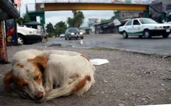
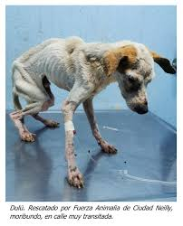
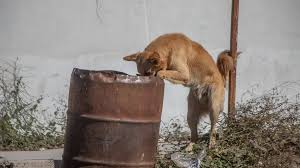
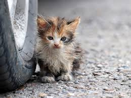

Caminar por las calles y encontrar un animal abandonado se ha vuelto, lamentablemente, parte del paisaje cotidiano. Sin embargo, la situación de calle es, en sí misma, una de las formas de maltrato más crueles y generalizadas. Un animal en la calle no “pertenece a la naturaleza”; es el resultado de un sistema de tenencia irresponsable y de una sociedad que ha aprendido a mirar hacia otro lado.
El maltrato callejero no solo comprende el hambre, la sed y las enfermedades sin tratar. Se manifiesta en la violencia directa de quienes los ven como una molestia: desde envenenamientos masivos y atropellamientos intencionales, hasta agresiones físicas por el simple hecho de buscar refugio. Estos animales viven en un estado de alerta constante, donde cada día es una batalla por la supervivencia en un entorno que los ignora o los rechaza.




El abandono de una sola pareja de animales sin esterilizar no suma individuos a la calle, los multiplica de forma exponencial. En México, la falta de campañas masivas de esterilización convierte a las calles en una “fábrica” constante de cachorros que nacen destinados al maltrato, el hambre y la enfermedad.
En la calle, el 70% de los cachorros mueren antes de cumplir el año debido a parásitos, moquillo, parvovirus o ataques de otros animales. La esterilización es el acto de mayor amor y responsabilidad porque evita el nacimiento de animales que nadie va a cuidar y previene enfermedades graves como el cáncer.
Terminar con el maltrato en la calle es una tarea colectiva. No se trata solo de “darles de comer”, sino de exigir leyes que castiguen el abandono y comprometernos a ser dueños responsables. Una mascota es un compromiso para toda la vida.